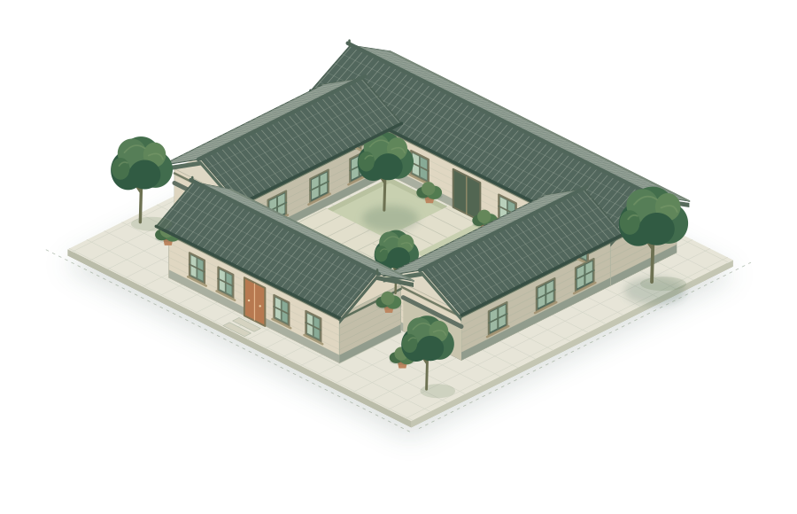

来自三份研究稿
平台采用论文表中的13个方案、5项绩效及4组情景权重。方案数据为五个代表户的等权平均，未按你家的面积或构造重新模拟。
- 既有低层住宅低碳改造方案的多目标排序与权重敏感性
- “最优”的脆弱性
- 谁的“最优”——洛阳老城区居民选配平台研究
三稿对询价与测算状态的表述不同，本平台统一标为研究情景估算。
预算有边界，生活有偏好。
从几个简单选择出发，让老房子的改变更合你意。

论文调研住宅
可比较改造组合
看见不同的取舍
生活偏好情景
基于论文情景估算
实际费用与适用性需现场确认
选出符合你家情况的选项，右侧会同步更新。
按论文方案估算总价筛选，预算上限不代表必须花完。
选择最接近你的生活偏好，之后也能自己调整。
权重仅用于比较取舍，不改变方案的估算性能。
这些选择决定哪些方案进入候选；默认暂不设置限制。
金额与效果来自论文五个代表户的平均估算，不是你家的施工报价或实测预测。
横轴是估算投资，纵轴是年减碳；灰色点未通过当前筛选。点击查看方案。
在同一组13种方案中，只改变偏好权重，看看不同的选择。
最多并排比较3个方案。价格、效果与生活影响，都看清楚。
把数据、假设和计算过程公开，才有真正可以讨论的选择。
平台采用论文表中的13个方案、5项绩效及4组情景权重。方案数据为五个代表户的等权平均，未按你家的面积或构造重新模拟。
三稿对询价与测算状态的表述不同，本平台统一标为研究情景估算。
预算和你选择的施工条件决定候选方案。再以省钱、减碳、舒适、风貌、少打扰五项权重计算综合匹配分。
成本使用对数反向归一化，其余指标使用线性归一化。参照范围固定为全部13种方案，筛掉某个方案不会改变其他方案的评分尺度。
“风貌友好”是论文情景评分，不代表审批结果；“少打扰”分数越高，预计扰动越小。
按年减碳量、电力碳排因子0.6101 kgCO₂/kWh、电价0.56元/kWh，折算全电力情景的等价年省电费。
简单回收期为估算投资除以等价年省电费，未计维护、折现、设备更换、补贴及光伏余电结算。
不将舒适改善与风貌价值直接兑换为现金，不承诺回本或补贴。
原稿没有完整说明归一化端点，表内部分名次不能直接复现。平台按公开规则实时重算，不预先写死名次。
P13历史参考方案在四组情景的重算位次为8、10、12、10，与原稿的7、9、12、9存在差异。
四组偏好是研究情景，不是居民身份分类。平台没有进行新的能耗模拟，也不将加权排序包装成AI预测。
完整13方案、不应用预算和施工筛选，按四组原始情景权重重新计算。